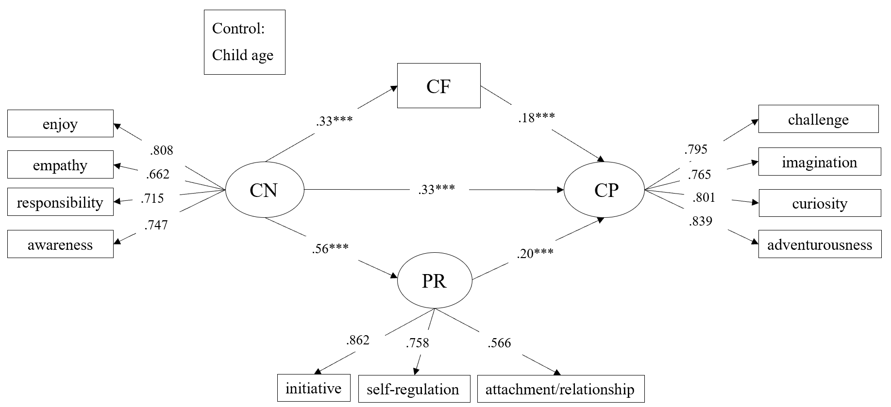

Research output
Publications & presentations.
Selected work. My name is shown in bold.
Publications
-
2026
The Influence of Connectedness to Nature on Young Children’s Creative Personality: A Parallel Mediation Analysis
Behavioral Sciences, 16(7), 1077.
DOI ↗
Parallel mediation model · Figure 2 · click to enlarge

Manuscripts
-
2026
When Knowledge and Efficacy Align: General Pedagogical Knowledge, Classroom-Management Self-Efficacy, and Student-Behavior Stress Across Eight Education Systems
Under revision -
2026
Learning with AI, Drafting with AI: A Cross-System Network Study of Self-Regulated Learning and Digital Problem Solving in PISA 2025
Under review -
2026
Socioeconomic inequalities in linked family and classroom reports of AI evaluation
Under review -
2026
Psychological Resilience and Connectedness to Nature in Preschool Children: A Two-Wave Longitudinal Study
Under revision -
2026
Nature Connectedness as a Developmental Environmental Resource in Preschool Children: Longitudinal Associations with Resilience and Parent-Child Conflict
Under review -
2026
Disentangling Between-Person Differences and Within-Person Dynamics in Nature Connectedness and Psychological Resilience: A Three-Wave Study of Preschool Children
Under review -
2026
Nature Connectedness and Creative Personality in Preschool Children: Longitudinal and Machine-Learning Evidence
Under revision
Conference presentations
-
Jul 2026
Which comes first? Longitudinal evidence for directional associations between psychological resilience and connectedness to nature in preschool children
PECERA 2026 Annual Conference · Singapore.
Oral presentation accepted -
Nov 2026
FairTransEdu: Fair and Temporally Robust Academic Prediction Using Longitudinal CFPS Data
International Conference on Computers in Education (ICCE 2026) · Christchurch, New Zealand.
Short paper accepted -
Nov 2026
Nature Connectedness and Creative Personality in Preschool Children: Longitudinal Associations and Exploratory Machine-Learning Evidence
Australian Association for Research in Education (AARE 2026) · Brisbane, Australia.
Poster accepted